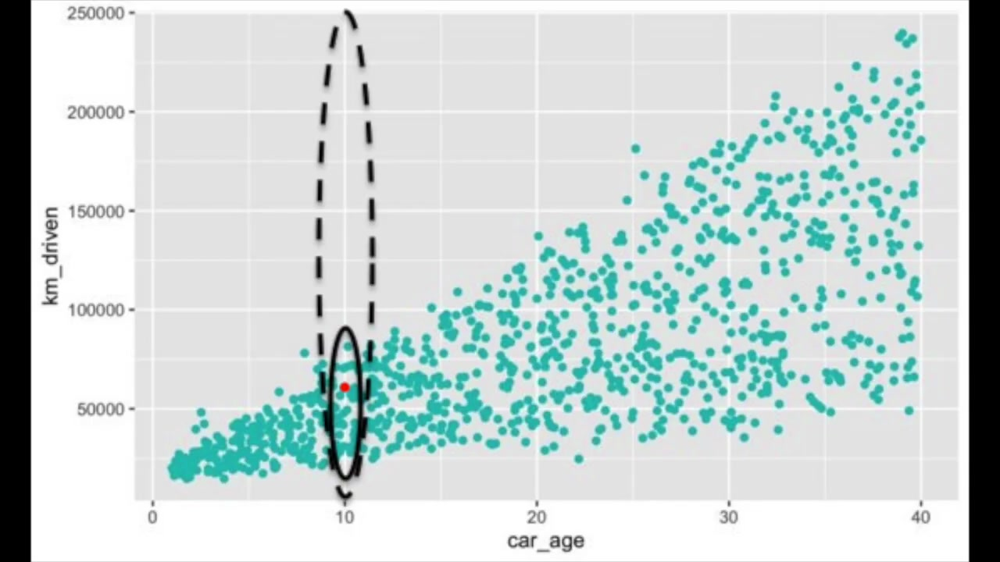

What a SHAP Explanation Can—and Cannot—Tell You
Companion to A Data Odyssey’s video · Conor O’Sullivan
The plots make it easy to see patterns. The harder task is deciding what those patterns justify saying. The playlist groups its cautions into four areas: implementation support, feature dependence, causal interpretation, and the stories people build around charts. Each follows directly from how an explanation is calculated.
The explainer must match the actual prediction path
SHAP is a collection of algorithms with different capabilities. A specialized explainer may support one model family or output and reject another. A general explainer can often work with a callable prediction function, but it still needs valid inputs and may require many evaluations.
For example, a model trained on encoded numerical columns cannot necessarily accept the original string-valued table. Passing those strings to a numerical predictor does not become valid just because SHAP is making the call. The explained function must include the same preprocessing used for real predictions.
Start with one row. Run it through the real predictor, compute its explanation, and reconstruct the chosen output. That small check catches many practical errors: swapped columns, the wrong class, a missing transformation, or a mismatch between probability and raw score. Save package versions with the result so another person can reproduce the setup.
A successful reconstruction is necessary for the additive explanation we are using, but it is not a complete quality certificate. A sampled calculation can reconstruct the endpoint while allocating the individual shares imprecisely. Repeat approximate explanations with a larger budget when a conclusion depends on small differences between features.
Dependent features change what “unknown” should mean
Recall how background replacement works: preserve the explained values in some columns, borrow the other columns from a reference row, and predict on that completed input. The resulting combination may be unusual even when both original rows are ordinary.
The video illustrates this with car age and mileage. Older cars tend to have traveled farther. If we keep a car’s age fixed at 10 years but replace its mileage using cars of every age, we can produce combinations rare or absent in the training data. The model still returns a number for those combinations, and those numbers enter the explanation.


One response is to average over mileage values typical of 10-year-old cars. That is a conditional approach: the reference for the hidden feature depends on the value we revealed. It may keep combinations more plausible, but it changes the quantity being explained. It is not merely a faster or more accurate implementation of the same question.
A short example shows the difference. Imagine two identical recorded columns, $A$ and $B$, and a model that reads only $A$. Under background replacement, revealing $B$ does not change the model input in column $A$, so $B$ contributes nothing. Under a conditional rule, observing $B$ reveals information about $A$, so $B$ can receive credit even though the predictor never directly reads it.
This is why “unused features get zero” must be stated for the chosen game. A feature that never changes any group value gets zero. Whether revealing an unused model input changes that group value depends on how unknown features are averaged.
A model contribution is not an intervention effect
Suppose a model uses a customer’s postcode to predict demand. Its SHAP value can be large because postcode helps the model distinguish patterns in the data. That does not establish that moving the same customer to another postcode would cause their demand to change by the assigned amount.
Postcode can stand in for other information: local availability, income, weather, or different customer groups. The model’s associations may be useful for prediction without identifying which real-world changes produce an outcome. This distinction is discussed in the SHAP guidance on causal interpretation.
Use wording that identifies the object being explained. “For this model and reference, shell weight contributes +1.4 predicted rings” is a claim about a computed prediction. “Increasing shell weight causes 1.4 more rings” is a different claim requiring different evidence.
The word interventional in a SHAP setting does not, on its own, establish causal effects in the real world. It specifies how the explanation handles feature replacement. A causal claim needs a justified causal setup beyond a prediction model and an attribution plot.
A plausible story still needs checking
The Abalone plots invite a story about why shell and meat weights have different contributions. That story might be useful, but the chart alone does not verify it. A feature can receive a surprising sign because of an interaction, redundant measurements, limited training coverage, or a model error.
Work outward from the evidence. Identify the rows behind the pattern. Inspect their actual measurements and prediction errors. Check whether the pattern survives a reasonable change of training sample or reference population. If a pattern exists only in a tiny subgroup, report that subgroup rather than describing the whole dataset.
A reference change and a sampling change mean different things. Increasing the number of sampled feature groups aims to estimate the same game more accurately. Replacing a general background with a specialist cohort asks a new comparison question. Treating both as interchangeable “stability checks” hides that distinction.
Write a conclusion that preserves the comparison
A useful explanation names the model output, the row or population, and the reference. It also separates the input value from its contribution. For example: “Among these 200 held-out shellfish, shell weight has the largest mean absolute contribution in predicted rings, relative to the 100 sampled training rows.” That statement can be checked against the computation.
It does not claim that shell weight causes age, that it is always the most useful measurement, or that the model is accurate enough for a particular application. Those questions deserve their own evidence. With this boundary clear, we can add richer plots without asking them to establish more than they contain.